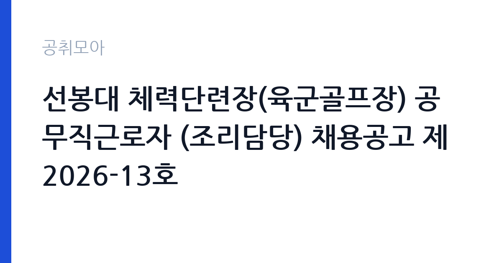

[국가기관] 선봉대 체력단련장(육군골프장) 공무직근로자 (조리담당) 채용공고 제2026-13호
국방부 국군조직 육군 · 경기 · 마감 2026-10-26 (D-17) · 출처 나라일터

한눈에 보는 모집 조건
| 기관 | 국방부 국군조직 육군 |
|---|---|
| 공고명 | 선봉대 체력단련장(육군골프장) 공무직근로자 (조리담당) 채용공고 제2026-13호 |
| 고용형태 | 공무직 |
| 근무지 | 경기 |
| 게시일 | 2026-10-09 |
| 마감일 | 2026-10-26 (D-17) |
지원자격, 이렇게 읽으세요
- 공무직 8급 1명
- 접수 ~2026-10-26 마감
- 세부 조건은 원문 공고문 확인
공고문의 응시자격은 원문 붙임에서 확인해야 합니다. 군골프장 조리담당은 단체급식 조리 실무가 중심이라, 통상 조리사 자격증(한식·양식 등)이나 집단급식소·군급식 조리 경력을 우대합니다. 학력 제한은 없을 가능성이 높고, 동일 기관의 프론트담당 공고도 학력무관·신입 가능 조건이었습니다. 수습기간 3개월이 있으니 수습 평가 기준도 원문에서 함께 확인하십시오. 자격증이 필수가 아닐 수 있으니 원문의 응시자격과 우대사항을 대조하는 것이 출발점입니다.
이 공고의 포인트
이 공고의 관전 포인트는 '공무직 8급 정규직'이라는 점입니다. 기간의 정함이 없는 근로계약이라 정년까지 보장되는 자리이며, 군 복지시설이라 운영이 안정적입니다. 두 번째로 전형 일정이 빠듯하면서도 명확하다는 점입니다. 서류심사 10월 27일, 면접심사 10월 29일, 채용일 11월 1일로, 합격하면 열흘 안에 출근합니다. 세 번째로 이메일 접수라 지방 거주자도 지원 장벽이 낮습니다. 조리 경력자라면 우선순위를 맨 위로 올려도 됩니다.
전형은 어떻게 진행되나
전형은 서류심사와 면접심사로 진행됩니다. 접수기간은 2026년 10월 9일부터 10월 26일까지이며, 첨부된 자사 이력서 양식과 서류를 이메일(fullmoon424@kakao.com)로 접수합니다. 서류심사는 10월 27일, 면접심사는 10월 29일, 채용일은 11월 1일로 일정이 촘촘합니다. 이메일 접수 특성상 마감일에는 메일 폭주가 예상되니 최소 이틀 전에는 발송하십시오. 발송 후에는 접수 확인 전화를 총무과(031-339-7763, 내선 6)로 하는 것이 안전합니다.
원문에서 확인한 전형 방식
○ 모집분야 : 군골프장 조리 담당 ○ 선발직급 : 공무직 8급(수습기간 3개월) ○ 고용형태 : 정규직 ○ 접수기간 : 2026년10월09일(금) ~ 2026년10월26일(월) ○ 서류심사 : 2026년10월27일(화) ○ 면접심사 : 2026년10월29일(목) ○ 채 용 일 : 2026년11월01일(일) ○ 응시방법 : 첨부된 자사이력서 양식 등 이메일 접수(fullmoon424@kakao.com) ○ 문 의 처 : 선봉대체력단련장 총무과 031-339-7763(내선 6)
이런 분께 추천해요
- 조리사 자격증이나 단체급식·군급식 조리 경력이 있는 분 — 실무 경력이 서류와 면접의 무기가 됩니다
- 용인·고양·경기북부 통근이 가능한 분 — 근무지 위치를 원문에서 확인하고 지원하십시오
- 11월 1일 채용일에 출근 가능한 분 — 합격 뒤 출근까지 열흘뿐이니 일정을 비워 두십시오
지원 전 체크리스트
- 자사 이력서 양식을 내려받아 작성했는가 — 자유 양식이 아니라 첨부 양식 제출이 조건입니다
- 이메일 접수 후 확인 전화를 했는가 — 스팸함 분류나 누락을 막으려면 확인이 필수입니다
- 수습기간 3개월의 평가 기준을 원문에서 확인했는가 — 정규직 전환 조건을 미리 알아야 합니다
- 조리 관련 자격증 사본과 경력증명서를 준비했는가 — 우대사항 증빙이 서류를 가릅니다
모집 일정과 제출 타이밍
이번 공고의 접수기간은 2026년 10월 9일부터 10월 26일까지입니다. 권장 스케줄은 이렇습니다. 첫째 주에 원문 공고문과 자사 이력서 양식을 확보하고 조리 경력을 정리하고, 10월 24일까지 이메일 접수를 마친 뒤, 25일에 접수 확인 전화를 하십시오. 서류심사는 10월 27일, 면접심사는 10월 29일, 채용일은 11월 1일입니다. 면접 준비 기간이 이틀뿐이니 서류 제출과 동시에 면접 답변도 준비하시기 바랍니다.
직무 이해하기: 국가기관
선봉대 체력단련장 조리담당은 군골프장 내 식당에서 이용객과 직원을 위한 조리를 맡습니다. 단체급식 조리와 배식, 식자재 검수와 위생관리, 주방 시설 청결 유지가 핵심 업무입니다. 선봉대 체력단련장은 육군 장병과 군인가족, 예약 이용객이 찾는 군 복지시설로, 골프장 운영 시간에 맞춘 이른 출근과 주말 근무가 포함될 수 있습니다. 동일 기관의 프론트담당 공고에는 주 5일 40시간 근무와 4대 보험, 퇴직연금 조건이 적혀 있으니, 조리담당의 근무시간도 원문에서 대조하십시오.
자기소개서 작성 팁
군골프장 조리담당 지원서의 핵심은 단체급식 실무 적합성입니다. 첫 문단에는 군 복지시설 주방을 택한 이유를 한 줄로 선언하십시오. 본론에는 하루 조리 인분 수, 담당했던 메뉴 분야, 위생등급 관리 경험을 숫자와 함께 구체적으로 서술하십시오. 숫자가 들어간 서술이 좋습니다. 예를 들어 일일 배식 인원, 보유 조리사 자격증, 식중독 무사고 기간 같은 수치를 적는 것입니다. 마무리는 입사 후 안전하고 맛있는 급식 제공에 기여하겠다는 각오로 닫으십시오. 군급식 경력이 있으면 맨 앞에 배치하십시오.
면접 준비 포인트
군 복지시설 조리직 면접은 실무 질문이 중심입니다. 대량 조리 시 식중독 예방 절차와 위생관리 수칙, 알레르기 유발 식자재 대응 방법을 설명할 수 있게 연습하십시오. 면접관이 가장 많은 인분을 조리해본 경험을 물으면 실제 사례를 들어 답하는 것이 좋습니다. 복장은 단정하게, 질문에는 결론부터 말하는 것이 기본입니다. 선봉대 체력단련장이 어떤 시설인지 한 줄로 말할 수 있게 준비하고 가십시오.
급여·근무조건 읽는 법
급여는 원문 공고문의 보수 조건에서 확인하시기 바랍니다. 참고로 동일 기관·동일 8급의 프론트담당 직전 공고에는 월급 2,156,880원 이상에 상여금 별도(기본급의 50퍼센트 수준, 월급에 미포함) 조건이 적혀 있었습니다. 출처는 고용 정보 게시판에 올라온 동일 기관 공고입니다. 조리담당도 같은 8급이지만 직종 수당이 다를 수 있으니 이번 공고의 보수표를 원문 붙임에서 직접 대조하십시오. 공무직 정규직이라 4대 보험과 퇴직금(퇴직연금)이 적용됩니다. 실수령액은 수당 구성에 따라 달라지니 수치 추정은 하지 않습니다.
자주 묻는 질문
- 선봉대 체력단련장은 어떤 곳인가요?
육군이 운영하는 체력단련장(군골프장)으로, 장병과 군인가족, 예약 이용객이 찾는 군 복지시설입니다. 식당과 프론트 등 운영 인력을 공무직으로 상시 채용하고 있습니다. - 공무직 8급은 어떤 신분인가요?
기간의 정함이 없는 무기계약 신분으로, 정년이 보장되는 정규직입니다. 수습기간 3개월을 거치며, 4대 보험과 퇴직금이 적용됩니다. - 접수는 어떻게 하나요?
첨부된 자사 이력서 양식과 제출서류를 이메일(fullmoon424@kakao.com)로 접수합니다. 접수기간은 2026년 10월 9일부터 10월 26일까지이며, 접수 뒤 총무과(031-339-7763, 내선 6)로 확인 전화를 하시기 바랍니다.
함께 보면 좋은 공고
[국가기관] [김포공항출입국·외국인사무소] 2026년 제1회 공무직근로자(출국대기실경비원) 채용 공고 — 마감 2026-10-19[국가기관] [국립군산대학교]국립대학육성사업 기간제 계약직원(선임연구원) 채용 재공고 — 마감 2026-10-15[국가기관] 26년 서초경찰서 무기계약직 근로자[시설관리] 채용 공고문[제 2026-4호] — 마감 2026-10-19출처: 나라일터 공개정보를 바탕으로 공취모아가 정리한 안내글입니다. 모집 조건·일정은 변경될 수 있으니 지원 전 반드시 원문 공고문을 확인하세요. 본 글은 정보 제공용이며 합격을 보장하지 않습니다.